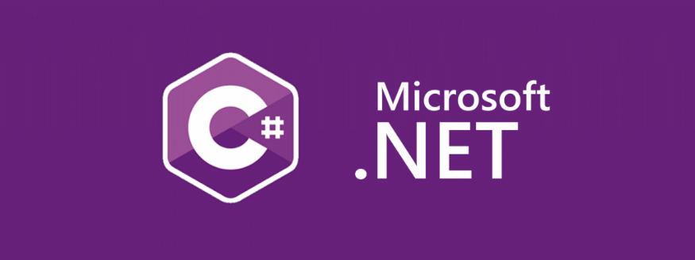

C#
C# Tarihçesi
C#; Microsoft tarafından .NET Teknolojisi için geliştirilen modern bir programlama dilidir. Sözdizimi C-like (C benzeri) bir deneyim sunar. Microsoft tarafından geliştirilmiş olsa da ECMA ve ISO standartları altına alınmıştır. C programlama dilinde bir tam sayı değişkeni 1 artırmak için değişkenden sonra "++" eki kullanılır. C++ dilinin adı, C diliyle Nesne Yönelimli Programlama yapabilme olanağı (C with Classes) için eklentiler sağladığı için "C++" şeklindedir. Benzer şekilde C++ diline yeni eklentiler yapılarak ((C++)++) bir adım daha da ileriye götürülmüş ve tamamen nesneye yönelik tasarlanmış C# dilinin isimlendirilmesinde, + karakterlerinin birbirlerine yakınlaşmış hali ve bir melodi anahtarı olan C# Major kullanılmıştır. Bu dilin tasarlanmasına Pascal, Delphi derleyicileri ve J++ programlama dilinin tasarımlarıyla bilinen Anders Hejlsberg liderlik etmiştir. Birçok alanda Java'yı kendisine örnek alır ve C# da java gibi C ve C++ kod sözdizimine benzer bir kod yapısındadır. .NET kütüphanelerini kullanmak amacıyla yazılan programların çalıştığı bilgisayarlarda uyumlu bir kütüphanenin ve yorumlayıcının bulunması gereklidir. Bu, Microsoft'un .NET Framework'u olabileceği gibi ECMA standartlarına uygun herhangi bir kütüphane ve yorumlayıcı da olabilir. Yaygın diğer kütüphanelere örnek olarak Portable.Net ve Mono verilebilir. Nesne yönelimli programlama kavramının gelişmesine katkıda bulunan aktif programlama dillerinden biridir. C#, .NET orta seviyeli programlama dillerindendir. Yani hem makine diline hem de insan algısına eşit seviyededir. Buradaki orta ifadesi dilin gücünü değil makine dili ile günlük konuşma diline olan mesafesini göstermektedir. Örneğin; Visual Basic .NET (VB.NET) yüksek seviyeli bir dildir dersek bu, dilin insanların günlük yaşantılarında konuşma biçimine yakın şekilde yazıldığını ifade etmektedir. Dolayısıyla VB.NET, C#.NET'ten daha güçlü bir dildir diyemeyiz. Programın çalışması istenen bilgisayarlarda Framework kurulu olması gerekmektedir. (Windows 7 ve Windows Vista'da .NET Framework kuruludur)